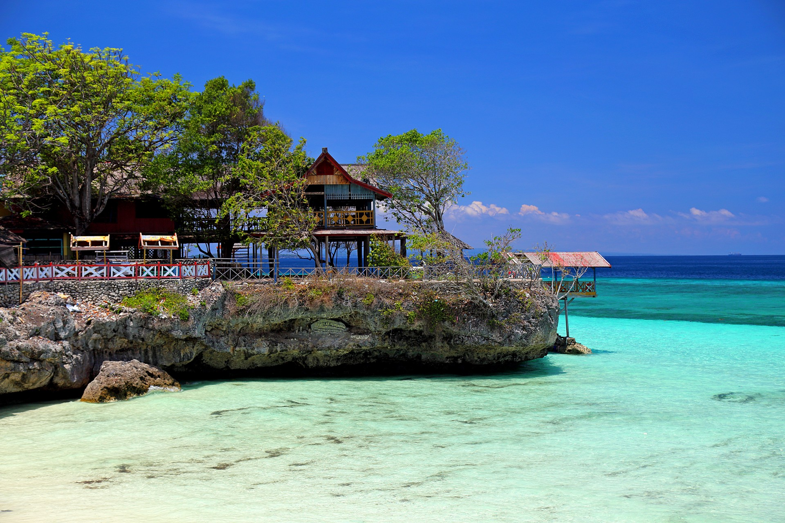
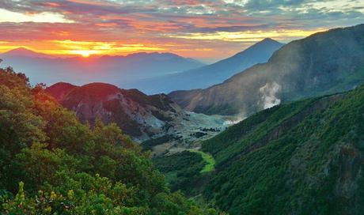
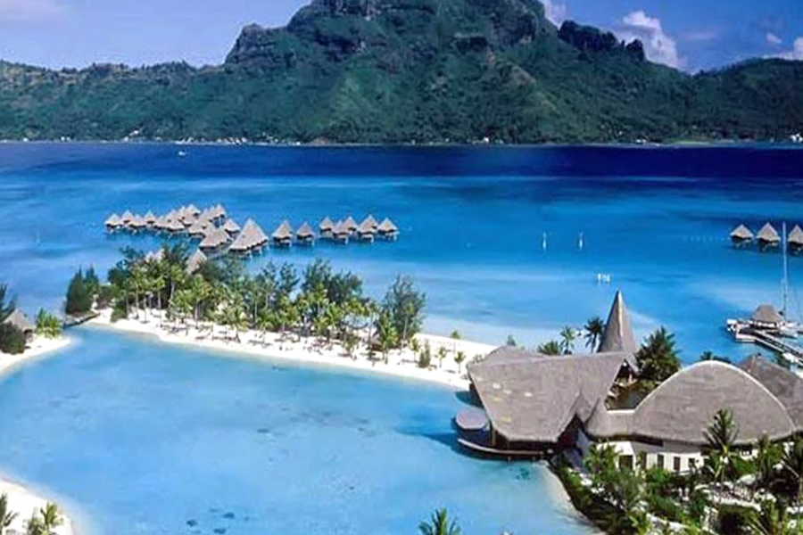
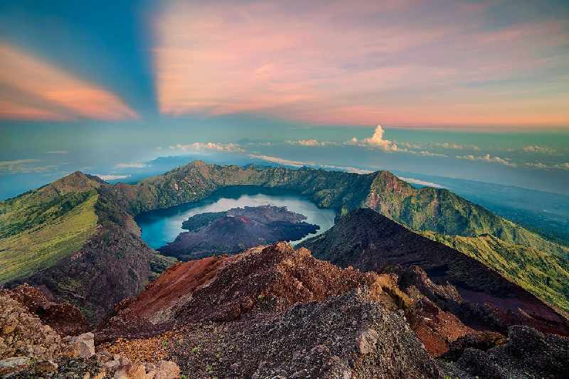
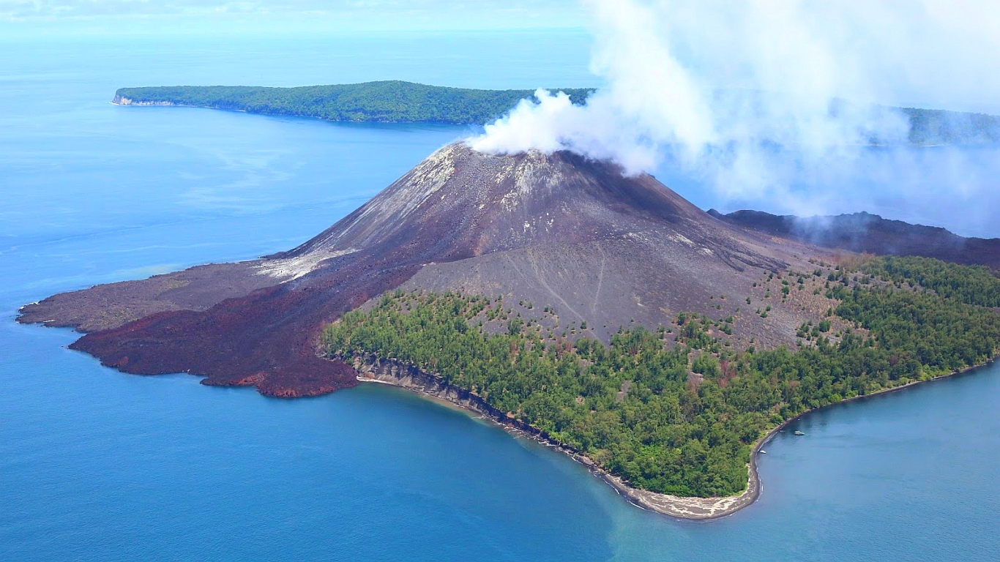
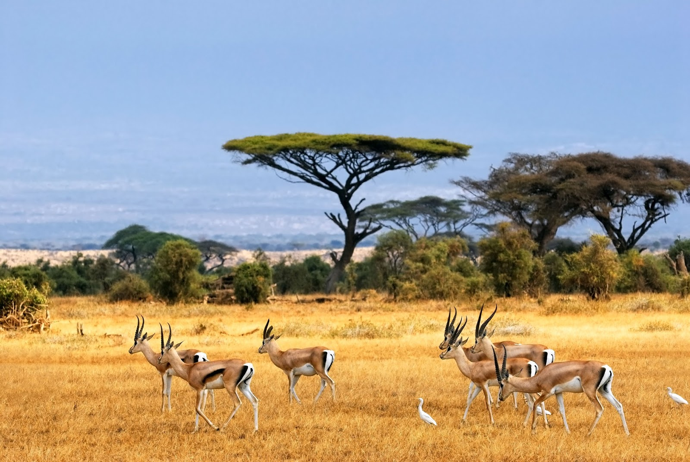
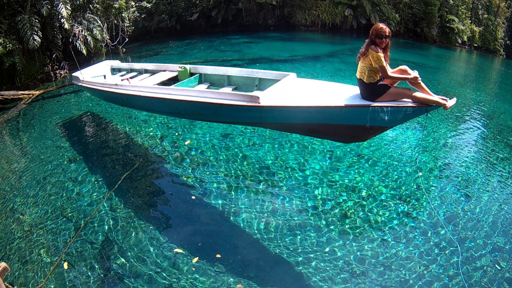

Alam Indonesia
Pengertian Kekayaan alam indonesia adalah sumber daya alam yang berbentuk fisik. Kekayaan alam tersebut dapat berupa kekayaan organik maupun non arganik. Indonesia sendiri adalah negara dengan banyak sumber daya alam. Hal ini karena letak geografis indonesia, yang diapit oleh dua benua dan dua samudra (Baca: Keuntungan Letak Geografis Indonesia dalam Berbagai Bidang) . Selain itu, tanah di negara indonesia terkenal akan kesuburannya. Hal ini karena negara indonesia memiliki banyak gunung api. Salah satu dampak yang ditimbukan oleh gunung api adalah tanah menjadi subur (Baca: Dampak Vulkanisme dalam Kehidupan).Bumi planet dengan banyak sumber daya alam (Baca: Pengertian Bumi dan Lapisannya). Sumber daya alam adalah sumber daya alam yang berasal dari alam. Setiap sumber daya alam mewakili setiap ekosistem di bumi. Ekosistem adalah tempat berinteraksinya biotik dengan biotik dan biotik dan abiotik. Ekosistem di bumi terbagi menjadi dua, yaitu ekosistem darat dan air (Baca: Jenis-jenis Ekosistem Darat dan Air). Indonesia adalah salah satu negara dengan keanekaragaman hayati di Indonesia flora dan fauna. Sehingga termasuk negara dengan sumber daya alam yang melimpah. Sumber daya alam di indonesia dianggap sebagai kekayaan alam indonesia yang memiliki banyak nilai manfaat. Kekayaan alam di indonesia dibagi menjadi 5 jenis berdasarkan pemulihannya, sifatnya, kegunaannya, nilai gunanya, serta lokasinya.
Eksplor Alam Indonesia

1.Gunung Rinjani
Gunung Rinjani adalah gunung yang berlokasi di Pulau Lombok, Nusa Tenggara Barat. Gunung yang merupakan gunung berapi kedua tertinggi di Indonesia dengan ketinggian 3.726 m dpl serta terletak pada lintang 8º25' LS dan 116º28' BT ini merupakan gunung favorit bagi pendaki Indonesia karena keindahan pemandangannya. Gunung ini merupakan bagian dari Taman Nasional Gunung Rinjani yang memiliki luas sekitar 41.330 ha dan ini akan diusulkan penambahannya sehingga menjadi 76.000 ha ke arah barat dan timur.Secara administratif gunung ini berada dalam wilayah tiga kabupaten: Lombok Timur, Lombok Tengah dan Lombok Barat.Keindahan Gunung Rinjani memang memukau banyak sekali para petualang manca negara. Tidak heran karena kekayaan alam Indonesia terbentang sepanjang negara. Malang-Melintang di garis khatulistiwa, Indonesia memiliki kawasan tropis yang menyimpan banyak sekali kekayaan alam. Tidak hanya masyarakatnya saja yang terpukau akan keindahan Indonesia, namun penjuru dunia takjub akan keindahan kekayaan alam Indonesia. Tidak heran apabila Indonsia di penuhi oleh para petualang mancanegara. Namun ada beberapa spot di Indonesia yang terkenal di mata dunia.
Topografi
Gunung Rinjani dengan titik tertinggi 3.726 m dpl, mendominasi sebagian besar pemandangan Pulau Lombok bagian utara.Di sebelah barat kerucut Rinjani terdapat kaldera dengan luas sekitar 3.500 m × 4.800 m, memanjang kearah timur dan barat. Di kaldera ini terdapat Segara Anak (segara= laut, danau) seluas 11.000.000 m persegi dengan kedalaman 230 m. Air yang mengalir dari danau ini membentuk air terjun yang sangat indah, mengalir melewati jurang yang curam. Di Segara Anak banyak terdapat ikan mas dan mujair sehingga sering digunakan untuk memancing. Bagian selatan danau ini disebut dengan Segara Endut.Di sisi timur kaldera terdapat Gunung Baru (atau Gunung Barujari) yang memiliki kawah berukuran 170m×200 m dengan ketinggian 2.296 - 2376 m dpl. Gunung kecil ini terakhir meletus pada tanggal 25 Oktober 2015 dan 3 November 2015[2], setelah sebelumnya tercatat meletus Mei 2009 dan pada tahun 2004.[3][4] Jika letusan tahun 2004 tidak memakan korban jiwa, letusan tahun 2009 ini telah memakan korban jiwa tidak langsung 31 orang, karena banjir bandang pada Kokok (Sungai) Tanggek akibat desakan lava ke Segara Anak.[5] Sebelumnya, Gunung Barujari pernah tercatat meletus pada tahun 1944 (sekaligus pembentukannya), 1966, dan 1994.Selain Gunung Barujari terdapat pula kawah lain yang pernah meletus,disebut Gunung Rombongan.
Stratigrafi
Secara stratigrafi, Gunung Rinjani dialasi oleh batuan sedimen klastik Neogen (termasuk batu gamping), dan setempat oleh batuan gunungapi Oligo-Miosen. Gunungapi Kuarter itu sendiri sebagian besar menghasilkan piroklastik, yang dibeberapa tempat berselingan dengan lava. Litologi itu merekam sebagian peletusan yang diketahui dalam sejarah. Sejak tahun 1847 telah terjadi 7 kali peletusan, dengan jangka istirahat terpendek 1 tahun dan terpanjang 37 tahun.Seperti pada gunungapi lainnya, Koesoemadinata (1979) menyebutkan bahwa aktivitas kegunungapian Rinjani pasca pembentukan kaldera adalah pembangunan kembali. Kegiatannya berupa efusiva yang menghasilkan lava dan eksplosiva yang membentuk endapan bahan-lepas (piroklastik). Lava umumnya berwarna hitam, dan ketika meleler tampak seperti berbusa. Peletusan pasca pembentukan kaldera relatif lemah, dan lava yang dikeluarkan oleh kerucut G. Barujari dan G. Rombongan relatif lebih basa dibanding lava gunungapi lainnya di Indonesia. Kemungkinan terjadinya awan panas ketika letusan memuncak sangat kecil. Bahan letusan umumnya diendapkan di bagian dalam kaldera saja.Aliran lava, lahar letusan, lahar hujan, dan awan panas guguran berpeluang mengarah ke Kokok Putih hingga Batusantek. Awan panas guguran dapat terjadi di sepanjang leleran lava baru yang masih bergerak, meskipun kemungkinannya kecil.
Struktur dan Tektonik
Bentuk Kaldera Segara Anak yang melonjong ke arah barat-timur diduga berkaitan dengan struktur retakan di batuan-dasar. Gunungapi Rinjani yang terletak di jalur gunungapi Kuarter sistem Busur Banda Dalam bagian barat dibentuk oleh kegiatan tunjaman dasar Samudera Hindia di bawah pinggiran Lempeng Asia Tenggara. Jalur tunjaman yang terletak di selatan menunjukkan adanya gaya mampatan yang berarah utara-selatan. Retakan batuan-dasar yang berarah barat-timur, yang mempengaruhi bangun kaldera, dengan demikian ditafsirkan sebagai retakan release yang disebabkan oleh gaya tarikan. Struktur itu setidaknya terbentuk sejak permulaan Zaman Kuarter.
Puncak Gunung Rinjani
Pendakian Gunung Rinjani (puncak) merupakan salah satu objek wisata yang menjadi andalan di kawasan Taman Nasional Gunung Rinjani. Gunung Rinjani sebagai gunung vulkanik yang masih aktif nomor 2 tertinggi di Indonesia. Puncak Gunung Rinjani merupakan tujuan sebagian besar para petualang dan pencinta alam yang mengunjungi kawasan ini karena apabila telah berhasil mencapai puncak itu merupakan suatu kebanggaan tersendiri. Animo komunitas pencinta alam di seluruh nusantara bahkan dari mancanegara dalam kegiatan pendakian cukup besar, ini terbukti dengan jumlah pengunjung yang melakukan pendakian setiap tahunnya mengalami peningkatan. Kegiatan pendakian secara besar-besaran dilakukan pada bulan Juli s/d Agustus, pada bulan Agustus (pertengahan) peserta pendakian umumnya didominasi oleh kalangan pelajar/mahasiswa dari seluruh Indonesia yang ingin merayakan HUT Kemerdekaan Republik Indonesia di Puncak Gunung Rinjani dan Danau Segara Anak melalui kegiatan “Tapak Rinjani” yang diadakan secara rutin setiap tahunnya oleh salah satu kelompok pencinta alam di Pulau Lombok yang bekerjasama dengan Balai Taman Nasional Gunung Rinjani.
Danau Segara Anak
Pesona unggulan Taman Nasional Gunung Rinjani yang sangat prospektif adalah Danau Segara Anak, lokasi ini dapat ditempuh dari dua jalur resmi pendakian yaitu jalur pendakian Senaru dan jalur pendakian Sembalun.Untuk mengunjungi Danau Segara Anak dari jalur Senaru dibutuhkan waktu tempuh sekitar 7 – 10 jam berjalan kaki (± 8 Km) dari pintu gerbang jalur pendakian Senaru. Sedangkan dari jalur pendakian Sembalun ditempuh dalam waktu 8 – 10 jam. Danau segara anak dengan ketinggian ± 2.010 m dpl dan kedalaman danau sekitar ± 230 meter mempunyai bentuk seperti bulan sabit dengan luasan sekitar 1.100 Ha.Disekitar Danau Segara Anak terdapat lahan yang cukup luas dan datar, dapat digunakan untuk tempat berkemping/berkemah, juga pengunjung bisa memancing ikan di danau atau berendam di air panas yang mengandung belerang.Objek lainnya di sekitar Danau Segara Anak adalah Hulu Sungai Koko Puteq ± 150 meter dari Danau Segara Anak. Selain itu terdapat pula Goa Susu, Goa Manik, Goa Payung, Goa Susu dipercaya dapat dijadikan media bercermin diri serta sering pula dipergunakan sebagai tempat bermeditasi. Sedangkan di bagian bawah Danau Segara Anak terdapat sumber air panas (Aik Kalak Pengkereman Jembangan) yang biasa digunakan untuk menguji dan memandikan benda-benda bertuah (Pedang, Keris, Badik, Tombak, Golok, dll) dimana jika benda-benda tersebut menjadi lengket apabila direndam itu menandakan benda-benda tersebut jelek/tidak memiliki kekuatan supranatural, sebaliknya apabila benda-benda tersebut tetap utuh berarti benda tersebut memiliki kekuatan supranatural/dipercaya memiliki keampuhan.
Pendakian
Rinjani memiliki panaroma paling bagus di antara gunung-gunung di Indonesia. Setiap tahunnya (Juni-Agustus) banyak dikunjungi pencinta alam mulai dari penduduk lokal, mahasiswa, pecinta alam.Suhu udara rata-rata sekitar 20 °C; terendah 12 °C. Angin kencang di puncak biasa terjadi di bulan Agustus.Selain puncak, tempat yang sering dikunjungi adalah Segara Anakan, sebuah danau terletak di ketinggian 2.000m dpl. Untuk mencapai lokasi ini kita bisa mendaki dari desa Senaru atau desa Sembalun Lawang (dua entry point terdekat di ketinggian 600m dpl dan 1.150m dpl).Kebanyakan pendaki memulai pendakian dari rute Sembalun dan mengakhiri pendakian di Senaru, karena bisa menghemat 700 m ketinggian. Rute Sembalun agak panjang tetapi datar, dan cuaca lebih panas karena melalui padang savana yang terik (suhu dingin tetapi radiasi matahari langsung membakar kulit). krim penahan panas matahari sangat dianjurkan.Dari Rute Senaru tanjakan tanpa jeda, tetapi cuaca lembut karena melalui hutan. Dari kedua lokasi ini membutuhkan waktu jalan kaki sekitar 7 jam menuju bibir punggungan di ketinggian 2.641m dpl (tiba di Plawangan Senaru ataupun Plawangan Sembalun). Di tempat ini pemandangan ke arah danau, maupun ke arah luar sangat bagus. Dari Plawangan Senaru (jika naik dari arah Senaru) turun ke danau melalui dinding curam ke ketinggian 2.000 mdpl) yang bisa ditempuh dalam 2 jam. Di danau kita bisa berkemah, mancing (Carper, Mujair) yang banyak sekali. Penduduk Lombok mempunyai tradisi berkunjung ke segara anakan untuk berendam di kolam air panas dan mancing.Untuk mencapai puncak (dari arah danau) harus berjalan kaki mendaki dinding sebelah barat setinggi 700m dan menaiki punggungan setinggi 1.000 m yang ditempuh dlm 2 tahap 3 jam dan 4 jam. Tahap pertama menuju Plawangan Sembalun, camp terakhir untuk menunggu pagi hari. Summit attack biasa dilakukan pada pukul 3 dinihari untuk mencari momen indah - matahari terbit di puncak Rinjani. Perjalanan menuju Puncak tergolong lumayan; karena meniti di bibir kawah dengan margin safety yang pas-pasan. Medan pasir, batu, tanah. 200 meter ketinggian terakhir harus ditempuh dengan susah payah, karena satu langkah maju diikuti setengah langkah turun (terperosok batuan kerikil). Buat highlander - ini tempat yang paling menantang dan disukai karena beratnya medan terbayar dengan pemandangan alamnya yang indah. Gunung Agung di Bali, Gunung Raung di Banyuwangi dan Gunung Tambora di Sumbawa terlihat jelas saat cuaca bagus di pagi hari. Untuk mendaki Rinjani tidak diperlukan alat bantu, cukup stamina, kesabaran dan gairah pendaki.Keseluruhan perjalanan dapat dicapai dalam program tiga hari dua malam, atau jika hendak melihat dua objek lain: Gua Susu dan gunung Baru Jari (anak gunung Rinjani dengan kawah baru di tengah danau) perlu tambahan waktu dua hari perjalanan. Persiapan logistik sangat diperlukan.
.jpg)
2.Puncak Jayawijaya, Papua
Puncak Jaya atau Carstensz Pyramid ialah sebuah puncak yang menjadi bagian dari Barisan Sudirman yang terdapat di Provinsi Papua, Indonesia. Puncak Jaya mempunyai ketinggian 4.884 m dan di sekitarnya terdapat gletser Carstensz, satu-satunya gletser tropika di Indonesia, yang kemungkinan besar segera akan lenyap akibat pemanasan global.[butuh rujukan].Puncak ini merupakan gunung yang tertinggi di Indonesia kawasan Oceania. Puncak Jaya adalah salah satu dari tujuh puncak dunia.Menjadi puncak tertinggi di Indonesia, Menjadi satu- satunya kawasan di Indonesia yang di selimuti oleh butiran es salju. Tidak hanya di Indonesia, Puncak Jayawijaya merupakan puncak tertingi di Australian dan Oceania. Terkenal akan tambang emas miliki PT Freeport Indonesia, pendakian menuju puncak Jayawijaya menjadi pendakian termahal, bro!
Sejarah
Dataran tinggi di sekitar puncak awalnya sudah dihuni sebelum adanya kontak dengan bangsa Eropa, dan puncaknya dikenal sebagai Nemangkawi di Amungkal. Puncak Jaya sebelumnya bernama Piramida Carstensz setelah penjelajah Belanda Jan Carstenszoon menamainya ketika pertama kali melihat gletser di puncak gunung pada hari yang cerah pada tahun 1623.Padang salju (gletser) Puncak Jaya berhasil didaki pada awal tahun 1909 oleh seorang penjelajah Belanda, Hendrikus Albertus Lorentz dengan enam orang suku Kenyah yang direkrut dari Apau Kayan di Kalimantan Utara. Taman Nasional Lorentz yang juga meliputi Piramida Carstensz, didirikan pada tahun 1919 menyusul laporan ekspedisi ini.
Pendakian
Pada tahun 1936, ekspedisi Carstensz yang diprakarsai Belanda, tidak mampu menetapkan dengan pasti yang mana dari ke tiga puncak adalah yang tertinggi, memutuskan untuk berusaha mendaki masing-masing puncak. Anton Colijn, Jean Jacques Dozy, dan Frits Julius Wissel mencapai padang gletser Carstensz Timur dan Puncak Ngga Pulu pada 5 Desember. Karena gletser yang mencair, ketinggian Puncak Ngga Pulu menjadi 4.862 meter, tetapi telah diperkirakan bahwa pada tahun 1936 (ketika gletser masih tertutup puncak seluas 13 kilometer persegi), Ngga Pulu memang puncak yang tertinggi dengan ketinggian lebih dari 5.000 meter.Setelahnya Puncak Jaya tidak pernah didaki sampai tahun 1962, oleh sebuah ekspedisi yang dipimpin oleh pendaki gunung Austria, Heinrich Harrer, dengan tiga anggota ekspedisi lainnya, Robert Philip Temple, Russell Kippax, dan Albertus Huizenga. Philip Temple dari Selandia Baru, sebelumnya memimpin ekspedisi ke daerah dan merintis rute akses ke pegunungan.Pada tahun 1963, puncak ini berganti nama menjadi Puncak Soekarno, setelah itu kemudian diganti menjadi Puncak Jaya. Nama Piramida Carstensz sendiri masih digunakan di kalangan para pendaki gunung.
Gletser
Sementara Puncak Jaya masih sedikit tertutup es, ada beberapa gletser di lereng, termasuk Gletser Carstensz, Gletser Northwall Firn Barat, dan Gletser Northwall Firn Timur, baru-baru ini dikabarkan lenyap.Gletser di Puncak Trikora di Pegunungan Maoke menghilang sama sekali dalam kurun waktu antara 1939 dan 1962.[3] Sejak tahun 1970-an, bukti dari citra satelit menunjukkan gletser Puncak Jaya telah menyusut dengan cepat. Gletser Meren mencair antara tahun 1994 dan 2000.[4] Sebuah ekspedisi yang dipimpin oleh paleoklimatologi Lonnie Thompson pada tahun 2010 menemukan bahwa gletser menghilang pada tingkat ketebalan 7 meter per tahun dan akan lenyap sama sekali pada tahun 2015.[5]
Nama Lain
Nama-nama/ejaan lain:
- Nemangkawi
- Ngga Pulu ("Ngga" berarti gunung)
- Gunung Carstensz
- Piramida Carstensz
- Puncak Carstensz
- Puncak Jayadikesuma
- Ndugundugu

3.Gunung Krakatau
Krakatau (bahasa Inggris: Krakatoa) adalah kepulauan vulkanik yang masih aktif dan berada di Selat Sunda antara pulau Jawa dan Sumatra yang termasuk dalam kawasan cagar alam. Nama ini pernah disematkan pada satu puncak gunung berapi di sana (Gunung Krakatau) yang sirna karena letusannya sendiri pada tanggal 26-27 Agustus 1883. Letusan itu sangat dahsyat; awan panas dan tsunami yang diakibatkannya menewaskan sekitar 36.000 jiwa. Sampai sebelum tanggal 26 Desember 2004, tsunami ini adalah yang terdahsyat di kawasan Samudera Hindia. Suara letusan itu terdengar sampai di Alice Springs, Australia dan Pulau Rodrigues dekat Afrika, 4.653 kilometer. Daya ledaknya diperkirakan mencapai 30.000 kali bom atom yang diledakkan di Hiroshima dan Nagasaki di akhir Perang Dunia II.Selat SundaLetusan Krakatau menyebabkan perubahan iklim global. Dunia sempat gelap selama dua setengah hari akibat debu vulkanis yang menutupi atmosfer. Matahari bersinar redup sampai setahun berikutnya. Hamburan debu tampak di langit Norwegia hingga New York.Ledakan Krakatau ini sebenarnya masih kalah dibandingkan dengan letusan Gunung Toba dan Gunung Tambora di Indonesia, Gunung Tanpo di Selandia Baru dan Gunung Katmal di Alaska. Namun gunung-gunung tersebut meletus jauh pada masa ketika populasi manusia masih sangat sedikit. Sementara ketika Gunung Krakatau meletus, populasi manusia sudah cukup padat, sains dan teknologi telah berkembang, telegraf sudah ditemukan, dan kabel bawah laut sudah dipasang. Dengan demikian dapat dikatakan bahwa saat itu teknologi informasi sedang tumbuh dan berkembang pesat.Tercatat bahwa letusan Gunung Krakatau adalah bencana besar pertama di dunia setelah penemuan telegraf bawah laut. Kemajuan tersebut, sayangnya belum diimbangi dengan kemajuan di bidang geologi. Para ahli geologi saat itu bahkan belum mampu memberikan penjelasan mengenai letusan tersebut. Gunung Krakatau yang meletus, getarannya terasa sampai Eropa.
Perkembangan Gunung Krakatau
Gunung Krakatau Purba
Melihat kawasan Gunung Krakatau di Selat Sunda, para ahli memperkirakan bahwa pada masa purba terdapat gunung yang sangat besar di Selat Sunda yang akhirnya meletus dahsyat yang menyisakan sebuah kaldera (kawah besar) yang disebut Gunung Krakatau Purba, yang merupakan induk dari Gunung Krakatau yang meletus pada 1883. Gunung ini disusun dari bebatuan andesitik.Catatan mengenai letusan Krakatau Purba yang diambil dari sebuah teks Jawa Kuno yang berjudul Pustaka Raja Parwa yang diperkirakan berasal dari tahun 416 Masehi. Isinya antara lain menyatakan:“ Ada suara guntur yang menggelegar berasal dari Gunung Batuwara. Ada pula goncangan bumi yang menakutkan, kegelapan total, petir dan kilat. Kemudian datanglah badai angin dan hujan yang mengerikan dan seluruh badai menggelapkan seluruh dunia. Sebuah banjir besar datang dari Gunung Batuwara dan mengalir ke timur menuju Gunung Kamula.... Ketika air menenggelamkannya, pulau Jawa terpisah menjadi dua, menciptakan pulau Sumatera. Krakatoa evolution map-fr.gifPakar geologi Berend George Escher dan beberapa ahli lainnya berpendapat bahwa kejadian alam yang diceritakan berasal dari Gunung Krakatau Purba, yang dalam teks tersebut disebut Gunung Batuwara. Menurut buku Pustaka Raja Parwa tersebut, tinggi Krakatau Purba ini mencapai 2.000 meter di atas permukaan laut, dan lingkaran pantainya mencapai 11 kilometer.Akibat ledakan yang hebat itu, tiga perempat tubuh Krakatau Purba hancur menyisakan kaldera (kawah besar) di Selat Sunda. Sisi-sisi atau tepi kawahnya dikenal sebagai Pulau Rakata, Pulau Panjang dan Pulau Sertung, dalam catatan lain disebut sebagai Pulau Rakata, Pulau Rakata Kecil dan Pulau Sertung. Letusan gunung ini disinyalir bertanggung jawab atas terjadinya abad kegelapan di muka bumi. Penyakit sampar bubonic terjadi karena temperatur mendingin. Sampar ini secara signifikan mengurangi jumlah penduduk di muka bumi.Letusan ini juga dianggap turut andil atas berakhirnya masa kejayaan Persia purba, transmutasi Kerajaan Romawi ke Kerajaan Byzantium, berakhirnya peradaban Arabia Selatan, punahnya kota besar Maya, Tikal dan jatuhnya peradaban Nazca di Amerika Selatan yang penuh teka-teki. Ledakan Krakatau Purba diperkirakan berlangsung selama 10 hari dengan perkiraan kecepatan muntahan massa mencapai 1 juta ton per detik. Ledakan tersebut telah membentuk perisai atmosfer setebal 20-150 meter, menurunkan temperatur sebesar 5-10 derajat selama 10-20 tahun.
Munculnya Gunung Krakatau
Pulau Rakata, yang merupakan satu dari tiga pulau sisa Gunung Krakatau Purba kemudian tumbuh sesuai dengan dorongan vulkanik dari dalam perut bumi yang dikenal sebagai Gunung Krakatau (atau Gunung Rakata) yang terbuat dari batuan basaltik. Kemudian, dua gunung api muncul dari tengah kawah, bernama Gunung Danan dan Gunung Perbuwatan yang kemudian menyatu dengan Gunung Rakata yang muncul terlebih dahulu. Persatuan ketiga gunung api inilah yang disebut Gunung Krakatau.Gunung Krakatau pernah meletus pada tahun 1680 menghasilkan lava andesitik asam. Lalu pada tahun 1880, Gunung Perbuwatan aktif mengeluarkan lava meskipun tidak meletus. Setelah masa itu, tidak ada lagi aktivitas vulkanis di Krakatau hingga 20 Mei 1883. Pada hari itu, setelah 200 tahun tertidur, terjadi ledakan kecil pada Gunung Krakatau. Itulah tanda-tanda awal bakal terjadinya letusan dahsyat di Selat Sunda. Ledakan kecil ini kemudian disusul dengan letusan-letusan kecil yang puncaknya terjadi pada 26-27 Agustus 1883.
Erupsi 1883
Pada hari Senin, 27 Agustus 1883, tepat jam 10.20, terjadi ledakan pada gunung tersebut. Menurut Simon Winchester, ahli geologi lulusan Universitas Oxford Inggris yang juga penulis National Geographic mengatakan bahwa ledakan itu adalah yang paling besar, suara paling keras dan peristiwa vulkanik yang paling meluluhlantakkan dalam sejarah manusia modern. Suara letusannya terdengar sampai 4.600 km dari pusat letusan dan bahkan dapat didengar oleh 1/8 penduduk bumi saat itu.Menurut para peneliti di University of North Dakota, ledakan Krakatau bersama ledakan Tambora (1815) mencatatkan nilai Volcanic Explosivity Index (VEI) terbesar dalam sejarah modern. The Guiness Book of Records mencatat ledakan Krakatau sebagai ledakan yang paling hebat yang terekam dalam sejarah.Ledakan Krakatau telah melemparkan batu-batu apung dan abu vulkanik dengan volume 18 kilometer kubik. Semburan debu vulkanisnya mencapai 80 km. Benda-benda keras yang berhamburan ke udara itu jatuh di dataran pulau Jawa dan Sumatera bahkan sampai ke Sri Lanka, India, Pakistan, Australia dan Selandia Baru.Letusan itu menghancurkan Gunung Danan, Gunung Perbuwatan serta sebagian Gunung Rakata di mana setengah kerucutnya hilang, membuat cekungan selebar 7 km dan sedalam 250 meter. Tsunami (gelombang laut) naik setinggi 40 meter menghancurkan desa-desa dan apa saja yang berada di pesisir pantai. Tsunami ini timbul bukan hanya karena letusan tetapi juga longsoran bawah laut.Tercatat jumlah korban yang tewas mencapai 36.417 orang berasal dari 295 kampung kawasan pantai mulai dari Merak di Kota Cilegon hingga Cilamaya di Karawang, pantai barat Banten hingga Tanjung Layar di Pulau Panaitan (Ujung Kulon serta Sumatera Bagian selatan. Di Ujungkulon, air bah masuk sampai 15 km ke arah barat. Keesokan harinya sampai beberapa hari kemudian, penduduk Jakarta dan Lampung pedalaman tidak lagi melihat matahari. Gelombang Tsunami yang ditimbulkan bahkan merambat hingga ke pantai Hawaii, pantai barat Amerika Tengah dan Semenanjung Arab yang jauhnya 7 ribu kilometer.
Anak Krakatau
Mulai pada tahun 1927 atau kurang lebih 40 tahun setelah meletusnya Gunung Krakatau, muncul gunung api yang dikenal sebagai Anak Krakatau dari kawasan kaldera purba tersebut yang masih aktif dan tetap bertambah tingginya. Kecepatan pertumbuhan tingginya sekitar 0.5 meter (20 inci) per bulan. Setiap tahun ia menjadi lebih tinggi sekitar 6 meter (20 kaki) dan lebih lebar 12 meter (40 kaki). Catatan lain menyebutkan penambahan tinggi sekitar 4 cm per tahun dan jika dihitung, maka dalam waktu 25 tahun penambahan tinggi anak Rakata mencapai 190 meter (7.500 inci atau 500 kaki) lebih tinggi dari 25 tahun sebelumnya. Penyebab tingginya gunung itu disebabkan oleh material yang keluar dari perut gunung baru itu. Saat ini ketinggian Anak Krakatau mencapai sekitar 230 meter di atas permukaan laut, sementara Gunung Krakatau sebelumnya memiliki tinggi 813 meter dari permukaan laut.Menurut Simon Winchester, sekalipun apa yang terjadi dalam kehidupan Krakatau yang dulu sangat menakutkan, realita-realita geologi, seismik serta tektonik di Jawa dan Sumatera yang aneh akan memastikan bahwa apa yang dulu terjadi pada suatu ketika akan terjadi kembali. Tak ada yang tahu pasti kapan Anak Krakatau akan meletus. Beberapa ahli geologi memprediksi letusan ini akan terjadi antara 2015-2083. Namun pengaruh dari gempa di dasar Samudera Hindia pada 26 Desember 2004 juga tidak bisa diabaikan.Anak Krakatau, Februari 2008.Menurut Profesor Ueda Nakayama salah seorang ahli gunung api berkebangsaan Jepang, Anak Krakatau masih relatif aman meski aktif dan sering ada letusan kecil, hanya ada saat-saat tertentu para turis dilarang mendekati kawasan ini karena bahaya lava pijar yang dimuntahkan gunung api ini. Para pakar lain menyatakan tidak ada teori yang masuk akal tentang Anak Krakatau yang akan kembali meletus. Kalaupun ada minimal 3 abad lagi atau sesudah 2325 M. Namun yang jelas, angka korban yang ditimbulkan lebih dahsyat dari letusan sebelumnya. Anak Krakatau saat ini secara umum oleh masyarakat lebih dikenal dengan sebutan "Gunung Krakatau" juga, meskipun sesungguhnya adalah gunung baru yang tumbuh pasca letusan sebelumnya.
Krakatau dalam karya seni
Film
Sastra
- Syair Lampung Karam tulisan Mohammad Saleh, terbit di Singapura (1883) berbahasa Melayu.

4.Taman laut Bunaken
Bunaken adalah sebuah pulau seluas 8,08 km² di Teluk Manado, yang terletak di utara pulau Sulawesi, Indonesia. Pulau ini merupakan bagian dari kota Manado, ibu kota provinsi Sulawesi Utara, Indonesia. Pulau Bunaken dapat di tempuh dengan kapal cepat (speed boat) atau kapal sewaan dengan perjalanan sekitar 30 menit dari pelabuhan kota Manado. Di sekitar pulau Bunaken terdapat taman laut Bunaken yang merupakan bagian dari Taman Nasional Bunaken. Taman laut ini memiliki biodiversitas kelautan salah satu yang tertinggi di dunia. Selam scuba menarik banyak pengunjung ke pulau ini. Secara keseluruhan taman laut Bunaken meliputi area seluas 75.265 hektare dengan lima pulau yang berada di dalamnya, yakni Pulau Manado Tua (Manarauw), Pulau Bunaken, Pulau Siladen, Pulau Mantehage berikut beberapa anak pulaunya, dan Pulau Naen. Meskipun meliputi area 75.265 hektare, lokasi penyelaman (diving) hanya terbatas di masing-masing pantai yang mengelilingi kelima pulau itu.Taman laut Bunaken memiliki 20 titik penyelaman (dive spot) dengan kedalaman bervariasi hingga 1.344 meter. Dari 20 titik selam itu, 12 titik selam di antaranya berada di sekitar Pulau Bunaken. Dua belas titik penyelaman inilah yang paling kerap dikunjungi penyelam dan pecinta keindahan pemandangan bawah laut.Sebagian besar dari 12 titik penyelaman di Pulau Bunaken berjajar dari bagian tenggara hingga bagian barat laut pulau tersebut. Di wilayah inilah terdapat underwater great walls, yang disebut juga hanging walls, atau dinding-dinding karang raksasa yang berdiri vertikal dan melengkung ke atas. Dinding karang ini juga menjadi sumber makanan bagi ikan-ikan di perairan sekitar Pulau Bunaken.Sayang sekali akibat nama besarnya, banyak orang Indonesia yang bahkan tidak pernah menginjakkan kakinya di Tanah Lumimuut, merasa telah mengenal dan tahu tentang Bunaken, bicara tentang Taman Nasional Bunaken, berarti berbicara tentang International Heritage and a miracle of Bunaken. Banyak peneliti dari luar negeri sangat menyayangkan kesalahan informasi dari Indonesia. Bunaken lebih daripada sekadar tahu dalam buku, Bunaken adalah pengalaman menyelam.

5.Taman Nasional Baluran
Taman Nasional Baluran adalah salah satu Taman Nasional di Indonesia yang terletak di wilayah Banyuputih, Situbondo dan Wongsorejo, Banyuwangi (sebelah utara), Jawa Timur, Indonesia. Nama dari Taman Nasional ini diambil dari nama gunung yang berada di daerah ini, yaitu Gunung Baluran. Gerbang untuk masuk ke Taman Nasional Baluran berada di 7°55'17.76"S dan 114°23'15.27"E. Taman nasional ini terdiri dari tipe vegetasi sabana, hutan mangrove, hutan musim, hutan pantai, hutan pegunungan bawah, hutan rawa dan hutan yang selalu hijau sepanjang tahun. Tipe vegetasi sabana mendominasi kawasan Taman Nasional Baluran yakni sekitar 40 persen dari total luas lahan.
Sejarah
Sebelum tahun 1928 AH. Loedeboer, seorang pemburu kebangsaan Belanda yang memiliki daerah Konsesi perkebunan di Labuhan Merak dan Gunung Mesigit, pernah singgah di Baluran. Dia telah menaruh perhatian dan meyakini bahwa Baluran mempunyai nilai penting untuk perlindungan satwa, khususnya jenis mamalia besar.Pada tahun 1930 KW. Dammerman yang menjabat sebagai Direktur Kebun Raya Bogor mengusulkan perlunya Baluran ditunjuk sebagai hutan lindung.Pada tahun 1937 Gubernur Jenderal Hindia Belanda menetapkan Baluran sebagai Suaka Margasatwa dengan ketetapan GB. No. 9 tanggal 25 September 1937 Stbl. 1937 No. 544.Pada masa pasca kemerdekaan, Baluran ditetapkan kembali sebagai Suaka Margasatwa oleh Menteri Pertanian dan Agraria Republik Indonesia dengan Surat Keputusan Nomor. SK/II/1962 tanggal 11 Mei 1962.Pada tanggal 6 Maret 1980, bertepatan dengan hari Strategi Pelestarian se-Dunia, Suaka Margasatwa Baluran oleh menteri Pertanian diumumkan sebagai Taman Nasional.[2]
Luas Kawasan
Berdasarkan SK. Menteri Kehutanan No. 279/Kpts.-VI/1997 tanggal 23 Mei 1997 kawasan TN Baluran ditetapkan memiliki luas sebesar 25.000 Ha.Sesuai dengan peruntukkannya luas kawasan tersebut dibagi menjadi beberapa zona berdasarkan SK. Dirjen PKA No. 187/Kpts./DJ-V/1999 tanggal 13 Desember 1999 yang terdiri dari:
- zona inti seluas 12.000 Ha.
- zona rimba seluas 5.537 ha (perairan = 1.063 Ha dan daratan = 4.574 Ha).
- zona pemanfaatan intensif dengan luas 800 Ha.
- zona pemanfaatan khusus dengan luas 5.780 Ha, dan zona rehabilitasi seluas 783 Ha.
Vegetasi
Taman Nasional ini memiliki sekitar 444 jenis tumbuhan dan di antaranya merupakan tumbuhan asli yang khas dan mampu beradaptasi dalam kondisi yang sangat kering. Tumbuhan khas tersebut adalah:
- Widoro bukol (Ziziphus rotundifolia)
- Mimba (Azadirachta indica)
- Pilang (Acacia leucophloea)
- Asam jawa (Tamarindus indica)
- Gadung (Dioscorea hispida)
- Kemiri (Aleurites moluccana)
- Gebang (Corypha utan)
- Api-api (Avicennia sp.)
- Kendal (Cordia obliqua)
- Salam (Syzygium polyanthum)
- Kepuh (Sterculia foetida) dill.
Satwa
Di Taman Nasional ini terdapat 26 jenis mamalia, di antaranya adalah:
- Banteng (Bos javanicus javanicus)
- Kerbau liar (Bubalus bubalis)
- Ajag (Cuon alpinus javanicus)
- Kijang (Muntiacus muntjak muntjak)
- Rusa (Cervus timorensis russa)
- Macan tutul (Panthera pardus melas)
- Kancil (Tragulus javanicus pelandoc)
- Kucing bakau (Prionailurus viverrinus)
Selain itu, terdapat sekitar 155 jenis burung, di antaranya termasuk burung langka seperti:
- Layang-layang api (Hirundo rustica)
- Tuwuk asia (Eudynamys scolopacea)
- Burung merak (Pavo muticus)
- Ayam hutan merah (Gallus gallus)
- Kangkareng (Anthracoceros convecus)
- Burung rangkong (Buceros rhinoceros)
- bangau tong-tong (Leptoptilos javanicus)
- Batangan. Di sini terdapat peninggalan sejarah berupa goa Jepang, burung merak pada musim kawin (antara bulan Oktober/November) dan berkemah. Fasilitas yang ada di sini antara lain pusat informasi
- Bekol dan Semiang. Di sini terdapat fasilitas pengamatan satwa seperti ayam hutan, merak, rusa, kijang, banteng, kerbau liar, dan burung. Fasilitas yang adadi sini antara lain wisma peneliti, wisma tamu, dan menara pandang.
- Bama, Balanan, dan Bilik. Di sini merupakan lokasi wisata bahari, lokasi memancing, menyelam/snorkeling, dan atraksi perkelahian antar rusa jantan (pada bulan Juli/Agustus) dan atraksi kawanan kera abu-abu yang memancing kepiting/rajungan dengan ekornya pada saat air laut surut.
- Manting, dan Air Kacip. Di sini terdapat sumber air yang tidak pernah kering sepanjang tahun, dan merupakan habitat macan tutul.
- Popongan, Sejile, Sirontoh, Kalitopo. Di sini terdapat fasilitas untuk naik sampan di laut yang tenang, melihat berbagai jenis ikan hias, dan lokasi pengamatan burung migran.
- Curah Tangis. Di sini terdapat fasilitas untuk kegiatan panjat tebing dengan tinggi 10-30 meter, dan kemiringan sampai 85%.

6.Pulau Derawan
Kepulauan Derawan adalah sebuah kepulauan yang berada di Kabupaten Berau, Kalimantan Timur. Di kepulauan ini terdapat sejumlah objek wisata bahari menawan, salah satunya Taman Bawah Laut yang diminati wisatawan mancanegara terutama para penyelam kelas dunia.Kepulauan Derawan memiliki tiga kecamatan yaitu, Pulau Derawan, Maratua, dan Biduk Biduk, Berau.Sedikitnya ada empat pulau yang terkenal di kepulauan tersebut, yakni Pulau Maratua, Derawan, Sangalaki, dan Kakaban yang ditinggali satwa langka penyu hijau dan penyu sisik.Secara geografis, terletak di semenanjung utara perairan laut Kabupaten Berau yang terdiri dari beberapa pulau yaitu Pulau Panjang, Pulau Raburabu, Pulau Samama, Pulau Sangalaki, Pulau Kakaban, Pulau Nabuko, Pulau Maratua dan Pulau Derawan serta beberapa gosong karang seperti gosong Muaras, gosong Pinaka, gosong Buliulin, gosong Masimbung, dan gosong Tababinga.Di Kepulauan Derawan terdapat beberapa ekosistem pesisir dan pulau kecil yang sangat penting yaitu terumbu karang, padang lamun dan hutan bakau (hutan mangrove). Selain itu banyak spesies yang dilindungi berada di Kepulauan Derawan seperti penyu hijau, penyu sisik, paus, lumba-lumba, kima, ketam kelapa, duyung, ikan barakuda dan beberapa spesies lainnya.Kepulauan Derawan ini sedang dipromosikan oleh Kabupaten Berau dan Provinsi Kalimantan Timur, sebagai salah satu wisata andalan. Wisatawan lokal dan Mancanegara, makin berwisata disana, pilihan selain untuk menyelam, melihat proses bertelur penyu, juga menikmati pantai yang bersih dan indah. Sepanjang pantai bersih dan tidak ada sampah. Fasilitas komunikasi di Kepulauan Derawan sudah baik, sebagai contohnya adalah sudah terjangkau dengan sinyal 3G.Resort dan Penginapan yang ada di Kepulauan Derawan banyak tersebar di pinggir pantai, dengan harga yang lebih murah misalnya dibandingkan dengan tempat wisata di Bali maupun di Lombok.Kepulauan Derawan telah dicalonkan untuk menjadi Situs Warisan Dunia UNESCO pada tahun 2005.
Potensi Kepulauan Derawan
Terumbu karang
Terumbu karang di Kepulauan Derawan tersebar luas pada seluruh pulau dan gosong yang ada di Kepulauan Derawan. Gosong-gosong yang ada di kepulauan ini di antaranya Gosong Pulau Panjang, Gosong Masimbung, Gosong Buliulin, Gosong Pinaka, Gosong Tababinga dan Gosong Muaras.Tipe terumbu karang di Kepulauan Derawan terdiri dari karang tepi, karang penghalang dan atol. Atol inilah yang telah terbentuk menjadi pulau dan terbentuk menjadi danau air asin. "Survei Manta Tow 2003" menunjukkan tutupan rata-rata terumbu karang di Pulau Panjang adalah 24,25% untuk karang keras dan 34,88 untuk karang hidup. Terumbu karang di Pulau Derawan memiliki tutupan rata-rata karang karang keras 17,41% dan tutupan karang hidup 27,78%. Dengan jumlah spesies 460 sampai 470 menunjukkan bahwa ini menjadi kekayaan biodiversitas nomor dua setelah Kepulauan Raja Ampat.
Areal terumbu karang yang utama :
- Pulau Panjang bagian barat (inlet dan channel)
- Karang Muaras dengan diversitas tinggi, karang sehat, dan nilai estetika
- Karang Malalungun, diversity tinggi dengan struktur yang kompleks dengan berbagai habitat
- Karang Besar yang kaya habitat .
Ikan karang
Survei ikan karang tahun 2003 menunjukkan bahwa kepulauan ini menghasilkan 832 spesies. Selain itu, diperkirakan sedikitnya 1.051 spesies terdapat di perairan Berau dengan jenis dominan Gobes (Gobiidae), Wrasses (Labridae), dan Damselfishes (Pomacentridae).
Padang lamun
Padang lamun ditemukan tersebar di seluruh Kepulauan Derawan dengan kondisi yang berbeda dengan rata-rata luas tutupan kurang dari 10% sampai 80%. Ekosistem ini secara ekologi dan ekonomi sangat penting tetapi keberadaannya terancam oleh gangguan dan kegiatan manusia seperti pembukaan hutan besar-besaran, kebakaran hutan, budidaya laut, sedimentasi, baling-baling perahu, dan lain-lain. Di Pulau Derawan terdapat dua jenis lamun yang dominan Thalasia hemprichii dan Halophila ovalis serta empat spesies lamun lain yang ditemukan di sekeliling pulau yaitu Halodule uninervis, Cyamodocea rotundata, Syringodium isoetifolium, dan Halodule pinifolia.
Mangrove
Mangrove di kawasan Delta Berau dimanfaatkan masyarakat secara tradisional sebagai sumber mata pencaharian keluarga, seperti menangkap ikan, udang, dan kepiting. Dalam sepuluh tahun terakhir, mangrove di Berau telah banyak dikonservasi menjadi tambak udang dan ikan dengan laju pembukaan lahan yang cepat. Nipah (Nypa fructican) mendominasi komposisi jenis mangrove di kawasan Delta Berau. Hasil kajian evaluasi ekonomi dan konservasi mangrove menunjukkan bahwa nilai ekonomi hutan mangrove memberikan manfaat langsung sebesar AS$ 295.78/ha/th, manfaat tidak langsung AS$ 726.26/ha/th, manfaat pilihan AS$ 358.46/ha/th, manfaat bersih AS$ 1,395.50/ha/th.
Perikanan tangkap
Kegiatan perikanan yang ada di Kecamatan Derawan dan Maratua meliputi perikanan laut, pengambilan telur penyu, dan budidaya tambak. Hasil penangkapan perikanan laut Kecamatan Kepulauan Derawan merupakan penyumbang terbesar pendapatan Kabupaten Berau dari lima kecamatan yang punya aktivitas penangkapan perikanan laut.Aktivitas ini pada tahun 2001 menyumbang Rp. 37.907.680,00. Jumlah kapal penangkapan ikan yang ada di Kecamatan Derawan dan Maratua tahun 2001 sebanyak 426 dengan jumlah perahu tanpa motor sebanyak 256 unit. Alat tangkap yang ada di Kecamatan Derawan dan Maratua adalah payang (pukat kantong) 74 unit, purse sein (pukat cincin) 14 unit, jaring insang 282 unit, jaring angkat 30 unit, pancing 139 unit, perangkap 66 unit dan alat pengumpul 13 unit.
Kegiatan ekonomi & pariwisata
Kegiatan perikanan merupakan tulang punggung kegiatan yang ada di Pulau Maratua dan Derawan sebab sebagian besar penduduknya bermata pencaharian sebagai nelayan. Perikanan yang dimanfaatkan oleh masyarakat Pulau Maratua dan Derawan adalah ikan pelagis dan ikan karang. Hasil penjualan ikan secara umum dijual di Pulau Derawan dan Maratua, Tanjung Redeb, Surabaya dan beberapa kota luar provinsi yang melewati pengumpul yang cukup besar, bahkan sering dimasukkan kepada eksportir yang kemudian dijual ke konsumen di luar negeri.Dalam bidang pariwisata, kepulauan Derawan menawarkan beragam potensi untuk menambah ekonomi masyarakat di kepulauan Derawan. Saat ini telah banyak warga sekitar yang bekerjasama dengan travel agent dari berbagai kota untuk melayani setiap pelancong yang ingin berlibur di kepulauan Derawan. Beragam macam jenis paket wisata] disajikan dalam bentuk private trip dan juga open trip.Semenjak tahun 2015, untuk menunjang kegiatan kepariwisataan diadakan kegiatan Maratua Jazz & Dive Fiesta yang diprakarsai oleh WartaJazz - The Jazz Ecosystem of Indonesia dan Yayasan Berau Lestari yang didukung Bupati Berau pada saat itu yaitu H. Makmur HAPK dan Kementrian Kelautan dan Perikanan RI dibawah arahan Menteri Susi Pudjiastuti lewat Direktorat Jenderal Pulau-pulau Kecil. Dikarenakan pergantian kepemimpinan di Kabupaten Berau, MJDF tidak dilaksanakan pada tahun 2016 dan kembali dilaksanakan pada tahun 2017 tepatnya di bulan November.Maratua Jazz and Dive Fiesta akan kembali dilaksanakan pada tanggal 27-29 Juli 2018 bertempat di kawasan desa Payung-payung, Pulau Maratua, Kepulauan Derawan, Kabupaten Berau.
Potensi kawasan konservasi
Dalam Rencana Tata Ruang Wilayah Kabupaten Berau telah direncanakan kawasan konservasi pulau-pulau kecil di Kepulauan Derawan. Potensi kawasan konservasi ini dilihat dari keanekaragaman hayati yang ada di kepulauan ini antara lain satwa endemik, dan tempat-tempat penting lain. Selain memiliki beberapa ekosistem tropis yang terdiri dari ekosistem terumbu karang, ekosistem lamun, dan ekosistem mangrove, Kepulauan Derawan juga punya spesies yang dilindungi dan khas.Spesies itu di antaranya ketam kelapa (Birgus latro), paus, lumba-lumba (Delphinus), penyu hijau (Chelonia mydas), penyu sisik (Erethmochelys fimbriata), dan dugong (Dugong dugon). Ketam kelapa dapat ditemukan di Pulau Kakaban dan Maratua. Paus dapat ditemukan di sekitar Pulau Maratua pada musim tertentu sedangkan lumba-lumba di sekitar Pulau Semama, Sangalaki, Kakaban, Maratua, dan Gosong Muaras. Penyu dapat ditemukan di sekitar Pulau Panjang, Derawan, Semama, Sangalaki dan Maratua serta Dugong di Pulau Panjang dan Semama. Spesies unik lain adalah Pari Manta (Manta birostris) yang terdapat pada di Pulau Sangalaki dan Pigmy Seahorse di Pulau Semama dan Derawan.